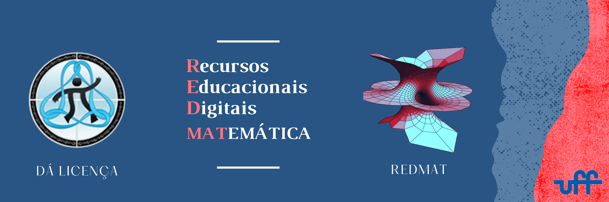

Neste módulo você aprenderá a:
- inserir fórmulas matemáticas nos fóruns da plataforma moodle, no Gmail ou em documentos Google Docs;
- escrever com lápis eletrônico (ou mouse) em um documento PDF, pode ser uma apostila, um texto ou um exercício de um aluno ou colega.
Estas dicas serão muito úteis para poder tirar dúvidas de alunos, trabalhar com outros colegas em grupo ou preparar suas vídeoaulas!
Use o painel de baixo ou o menu da esquerda para passar de página!